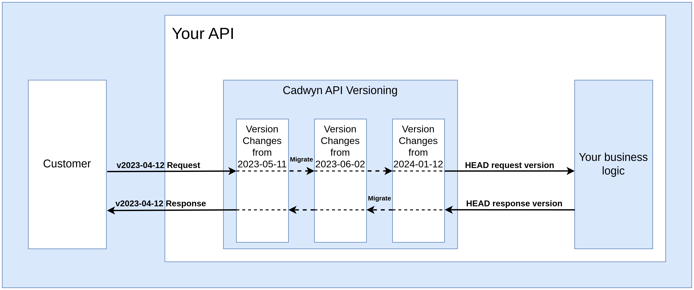

Version Changes¶
Version changes are the backbone of Cadwyn. They allow to describe things like "This field in that schema had a different name in an older version" or "this endpoint did not exist in all earlier versions".
In Cadwyn, your business logic always works with a single version -- HEAD, which is the representation of your latest version. This approach decouples your business logic from versioning and allows you to have hundreds of API versions using the same database models and business logic while staying sane.
Follow these steps to add a new version:
- Make a breaking change in your HEAD version
- Reverse it for all your older versions using special "migration instructions" so that your current users are not affected by the breaking changes
These migration instructions for reverting the breaking changes are gathered into groups to make them easier to maintain. Let's say you want to rename the creation_date field to created_at but you also want to delete the GET /v1/tax_ids endpoint: these changes are unrelated so they should be placed into different groups.
On the other hand, deletion of the POST /v1/tax_ids endpoint should go into the same group as the deletion of GET /v1/tax_ids. These groups are very important to make the changes easily understandable for both your users and your developers.
Each such group is called a version change:
# versions/v2023_02_10.py
from cadwyn import VersionChange, endpoint
class RemoveTaxIdEndpoints(VersionChange):
description = "Remove `GET /v1/tax_ids` and `POST /v1/tax_ids` endpoints"
instructions_to_migrate_to_previous_version = (
endpoint("/v1/tax_ids", ["GET", "POST"]).existed,
)
After you have described them, you add your version change class(es) into your version bundle to activate them:
# versions/__init__.py
from cadwyn import HeadVersion, Version, VersionBundle
from .v2023_02_10 import RemoveTaxIdEndpoints
versions = VersionBundle(
HeadVersion(),
Version("2023-02-10", RemoveTaxIdEndpoints),
Version("2022-11-16"),
)
This instructs Cadwyn to undelete these endpoints in all versions older than 2023-02-10.
Now let's discuss what each of these parts does and why:
VersionBundle¶
VersionBundle is your single source of truth for your list of versions. It contains your list of versions and all version changes associated with them. Each version change is a single group of breaking changes. Each Version contains a group of version changes that caused this version to be created. For example, if I delete the POST /v1/tax_ids endpoint in version 2023-02-10, then I'll add a version change for deleting that endpoint into 2023-02-10. For example:
# versions/__init__.py
from cadwyn import HeadVersion, Version, VersionBundle
from .v2023_02_10 import RemoveTaxIdEndpoints
versions = VersionBundle(
HeadVersion(),
Version("2023-02-10", RemoveTaxIdEndpoints),
Version("2022-11-16"),
)
Did you notice that the first version 2022-11-16 does not have any version changes? That is intentional. How can it have breaking changes if there are no prior versions before it?
Version¶
Version is simply an ordered collection of version changes that allows to describe when each version change happened so that Cadwyn is able to generate your schemas and routes for all versions correctly, based on which version changes are located in which versions.
HeadVersion¶
Cadwyn has a special HEAD version: it is the only version you will create manually and use directly in your business logic. It is also the version that is used by Cadwyn for generating all other versions.
When handling an HTTP request, Cadwyn first validates it with the appropriate API version, then Cadwyn applies all converters from the request's API version and up to the latest API version to it, and then finally Cadwyn converts the request to the appropriate schema from HEAD version (the schema that was used for generating the versioned schema from request's API version).
So Cadwyn migrates all requests from all versions to HEAD version to make sure that your business logic operates with only one version.
HEAD is very similar to your latest version but for a few key differences:
- Latest is user-facing while HEAD is only used internally by you and Cadwyn
- Latest is generated while HEAD is maintained by you manually
- Latest only includes the fields that our user is supposed to see in the latest version while HEAD can include some fields missing from latest. For example, if an earlier version contained a field completely incompatible with latest, HEAD will have it too to make sure that old versions can function the same as before. This also applies to field types: if a field is required in latest but was nullable in an earlier version, then HEAD will have it as nullable to make sure that any earlier version request can easily be converted into a HEAD request
- Latest can include constraints that are incompatible with older versions while HEAD can contain no constraints at all if you want -- the user-facing schemas are applied for validation before the request is converted to HEAD so HEAD does not need to re-validate anything if you do not want it to
VersionChange¶
VersionChange classes describe each atomic group of business capabilities that you have altered in a version.
Note, however, that you only need to have a migration if it is a breaking change for your users. If you add a new endpoint or add a new field to your response schema, you do not need to have a migration for it because your users' code will not break. So by not having a migration you automatically add this change to all versions.
VersionChange.__name__¶
The name of a version change, for example RemoveTaxIdEndpoints, describes what breaking change has happened. It must be a verb and it is the best clue for your new developers to quickly understand what happened between the versions. Feel free to use long names: it is better to have a long name than a name that fails to convey what exactly happened. Better have a voluminous name such as RenameCreationDatetimeAndUpdateDatetimeToCreatedAtAndUpdatedAt than to have a generic name such as RefactorFields. Because after just a few of such version changes your versioning structure can become completely unreadable:
versions = VersionBundle(
Version("2023-05-09", ChangeCreateLogic, AddRequiredFields),
Version("2023-04-02", DeleteEndpoint, ChangeFields, RenameFields),
Version("2023-02-10", RenameEndpoints, RefactorFields),
Version("2022-11-16"),
)
VersionChange.description¶
The description field of your version change must be even more detailed. In fact, it is intended to be the name and the summary of the version change for your clients. It must clearly state to you clients what happened and why. So you need to make it grammatically correct, detailed, specific, and written for humans. Note that you do not have to use a strict machine-readable format -- it is a portion of documentation, not a set of instructions. Let's take Stripe's description to one of their version changes as an example:
Event objects (and webhooks) will now render a `request` subobject that contains a request Id and idempotency key instead of just a string request Id.
It is concise, descriptive, and human-readable -- just like any good documentation. Now let's have a look at a bad description:
Migration from first version (2022-11-16) to 2023-09-01 version.
Changes:
* Changed schema for 'POST /v1/tax_ids' endpoint
- Its first line,
Migration from first version (2022-11-16) to 2023-09-01 version., duplicates the already-known information -- your developers will know which versionVersionChangemigrates to and from by its location in VersionBundle and most likely by its file name. So it is redundant information - Its second line,
Changes:, does not provide useful information either because description of aVersionChangecannot describe anything but changes. So again, it is redundant information - Its third line,
Changed schema for 'POST /v1/tax_ids' endpoint, gives both too much and too little information. It states changing of a schema but it does not mention what exactly was changed. The goal is to make it easy for our clients to migrate from one version to another. The recommended description here is to mention the OpenAPI model name that you changed, the fields you changed, and why you changed them
VersionChange.instructions_to_migrate_to_previous_version¶
In Cadwyn, you use the latest version. This attribute is a way for you to describe how your schemas and endpoints looked in previous versions so that Cadwyn can guess schema and route generation to recreate the old schemas and endpoints for your clients. So you only need to maintain your head (latest) schemas and your migrations while Cadwyn takes care of the rest. In fact, you spend minimal effort on maintaining your migrations because they are effectively immutable -- they describe the breaking changes that happened in the past so there is no need to ever change them.
This approach of maintaining the present and describing the past might appear weird. You just need to form the correct mindset which is counter-intuitive at first but after one or two attempts at versioning you will see how much sense this approach makes.
Imagine you need to know what your code looked like two weeks ago. You would use git checkout or git reset with an older commit because git stores the latest version of your code (which is also called HEAD) and the diffs between it and each previous version as a chain of changes. This is how Cadwyn works. We store the latest version and use the diffs to regenerate the older versions.
Note to curious readers
Git doesn't actually work this way internally. My description is closer to how SVN works. It is just a simple metaphor to explain a concept.Data migrations¶
Let's say we renamed the field creation_date to created_at. We have altered our schemas -- that's great! But when our clients send us requests using the old versions of our API -- we will still get the data where we have creation_date instead of created_at. How do we solve this? Well, in Cadwyn your business logic never receives requests of the old versions. Instead, it receives only the requests of the latest version. So when you define a version change that renames a field, you need to also define how to convert the request body from the old version to the newer version. For example:
from cadwyn import (
RequestInfo,
VersionChange,
convert_request_to_next_version_for,
schema,
)
from invoices import InvoiceCreateRequest
class RemoveTaxIdEndpoints(VersionChange):
description = "Rename `Invoice.creation_date` to `Invoice.created_at`."
instructions_to_migrate_to_previous_version = (
schema(InvoiceCreateRequest)
.field("creation_date")
.had(name="created_at"),
)
@convert_request_to_next_version_for(InvoiceCreateRequest)
def rename_creation_date_to_created_at(request: RequestInfo):
request.body["created_at"] = request.body.pop("creation_date")
Did you notice how the schema for InvoiceCreateRequest is specified in our migration? This signals Cadwyn to apply it to all routes with this schema as their body.
Now we have not only described how schemas changed but we have also described how to migrate a request of the old version to the new version. When Cadwyn receives a request targeting a particular version, the request is first validated against the schema of that particular version. Then Cadwyn applies all request migrations until the latest version to migrate the request to latest. So now your business logic receives the latest version of the request yet for your clients you have two versions of your API -- you have added variability without introducing any complexity into your business logic.
But wait... What happens to the Invoice responses? Your business logic will now return created_at so your clients from old versions will be affected. Cadwyn has a tool for that too: we migrate our responses as well. Requests were migrated forward in versions while responses are migrated backward in versions. So your business logic returns a response of the latest version and Cadwyn will use your response migrations to migrate it back to the version of your client's request:
from cadwyn import (
RequestInfo,
ResponseInfo,
VersionChange,
convert_request_to_next_version_for,
convert_response_to_previous_version_for,
schema,
)
from invoices import (
BaseInvoice,
InvoiceCreateRequest,
InvoiceResource,
)
class RemoveTaxIdEndpoints(VersionChange):
description = "Rename `Invoice.creation_date` to `Invoice.created_at`."
instructions_to_migrate_to_previous_version = (
schema(BaseInvoice).field("creation_date").had(name="created_at"),
)
@convert_request_to_next_version_for(InvoiceCreateRequest)
def rename_creation_date_to_created_at(request: RequestInfo):
request.body["created_at"] = request.body.pop("creation_date")
@convert_response_to_previous_version_for(InvoiceResource)
def rename_created_at_to_creation_date(response: ResponseInfo):
response.body["creation_date"] = response.body.pop("created_at")
Did you notice how the schema for InvoiceResource is specified in our migration? This signals Cadwyn to apply it to all routes with this schema as their response_model. Notice also that we now use BaseInvoice in our instructions -- imagine it is the parent of both InvoiceCreateRequest and InvoiceResource so renaming it there will rename it in these schemas as well. You can, however, apply the instructions to both individual schemas instead of their parent if you want to.
Now our request comes, Cadwyn migrates it to the latest version using our request migration, then we do our business logic, return the latest response from it, and Cadwyn migrates it back to the request version. Does our business logic or database know about the fact that we have two versions? No, not at all. It is zero-cost. Consider the benefits of supporting not just two, but two hundred versions.

Notice how the latest versions of our schemas are used in our migration -- this pattern can be found everywhere in Cadwyn. The latest version of your schemas is used to describe what happened to all other versions because other versions might not exist when you are defining migrations for them.
Path-based migration specification¶
Often you need to migrate based on the endpoint path rather than the request body or response model. This happens when, for example, endpoint does not have a request body or its response model is used in other places that we do not want to migrate. Consider the example above, but use paths instead of schemas:
from cadwyn import (
RequestInfo,
ResponseInfo,
VersionChange,
convert_request_to_next_version_for,
convert_response_to_previous_version_for,
schema,
)
from invoices import BaseInvoice
class RemoveTaxIdEndpoints(VersionChange):
description = "Rename `Invoice.creation_date` to `Invoice.created_at`."
instructions_to_migrate_to_previous_version = (
schema(BaseInvoice).field("creation_date").had(name="created_at"),
)
@convert_request_to_next_version_for("/v1/invoices", ["POST"])
def rename_creation_date_to_created_at(request: RequestInfo):
request.body["created_at"] = request.body.pop("creation_date")
@convert_response_to_previous_version_for("/v1/invoices", ["GET"])
def rename_created_at_to_creation_date(response: ResponseInfo):
response.body["creation_date"] = response.body.pop("created_at")
Though I highly recommend you to stick to schemas as it is much easier to introduce inconsistencies when using paths; for example, when you have 10 endpoints with the same response body schema but you forgot to add migrations for 3 of them because you use paths instead of schemas.
Migration of HTTP errors¶
Often you need to raise fastapi.HTTPException in your code to signal some errors to your users. However, if you want to change the status code of some error, it would be a breaking change because your error status codes and sometimes even their bodies are a part of your API contract.
By default, Cadwyn's response migrations do not handle errors but you can use the migrate_http_errors keyword argument to enable it:
from cadwyn import (
ResponseInfo,
VersionChange,
convert_response_to_previous_version_for,
)
class RemoveTaxIdEndpoints(VersionChange):
description = "Replace status code 400 with 404 in 'GET /v1/invoices' if invoice is not found"
instructions_to_migrate_to_previous_version = ()
@convert_response_to_previous_version_for(
"/v1/invoices", ["GET"], migrate_http_errors=True
)
def replace_400_with_404(response: ResponseInfo):
if response.status_code == 400:
response.status_code = 404
Migration of non-body attributes¶
Cadwyn can migrate more than just request bodies.
RequestInfo has the following interfaces to migrate requests:
body: Anyheaders: starlette.datastructures.MutableHeaderscookies: dict[str, str]query_params: dict[str, str]
ResponseInfo has the the following interfaces to migrate responses:
body: Anystatus_code: intheaders: starlette.datastructures.MutableHeaders- set_cookie
- delete_cookie
Internal representations¶
So far, we have only reviewed simple cases. But what happens when you cannot migrate your data that easily? It can happen because your earlier versions had more data than your newer versions. Or that data had more formats.
Imagine that previously the User schema had a list of addresses but now we want to make a breaking change and turn them into a single address. The naive migration will take the first address from the list for requests and turn that address into a list for responses like this:
from cadwyn import (
RequestInfo,
ResponseInfo,
VersionChange,
convert_request_to_next_version_for,
convert_response_to_previous_version_for,
schema,
)
from users import BaseUser
# THIS IS AN EXAMPLE OF A BAD MIGRATION
class RemoveTaxIdEndpoints(VersionChange):
description = "Users now have `address` field instead of `addresses`"
instructions_to_migrate_to_previous_version = (
schema(BaseUser).field("address").didnt_exist,
schema(BaseUser).field("addresses").existed_as(type=list[str]),
)
@convert_request_to_next_version_for(BaseUser)
def turn_addresses_into_a_single_item(request: RequestInfo):
addresses = request.body.pop("addresses")
# The list could have been empty in the past so new "address"
# field must be nullable.
request.body["address"] = addresses[0] if addresses else None
@convert_response_to_previous_version_for(BaseUser)
def turn_address_into_a_list(response: ResponseInfo):
response.body["addresses"] = [response.body.pop("address")]
But this will not work. If the user from the old version requests to save three addresses, only one will actually be saved. Old data is also going to be affected: if old users had multiple addresses, we will only be able to return one of them. This is important: a breaking change has been introduced.
In order to solve this issue, Cadwyn uses a concept of internal representations. An internal representation of your data is like a database entry of your data -- it is its latest version plus all the fields that are incompatible with the latest API version. If we were talking about classes, then internal representation would be a child of your latest schemas -- it has all the same data and a little more, it expands its functionality. Essentially your internal representation of user object can contain much more data than your latest schemas.
So all your requests get migrated to HEAD, which is the internal representation of latest -- but not exactly the latest itself. So its data is really similar to latest. The same applies to your responses: you do not respond with and migrate from the latest version of your data, you respond with its internal representation which is really close to the actual latest schemas.
In responses, returning the internal representation is simple: return your database model or a dict with everything you need for all your versions. In the user address example, it is recommended to continue storing the list of addresses in the database and add a single address to a response. The latest schemas will strip it while older schemas will be able to use it.
# in your business logic
return {"address": user.addresses[0] if user.addresses else None, **user}
So now your migration will look like the following:
from cadwyn import VersionChange, schema
from users import User
class RemoveTaxIdEndpoints(VersionChange):
description = "Users now have `address` field instead of `addresses`"
instructions_to_migrate_to_previous_version = (
schema(User).field("address").didnt_exist,
schema(User).field("addresses").existed_as(type=list[str]),
)
Yes, we do not need any of the migrations anymore because responses are handled automatically. See the how-to section for an example of achieving the same result with requests.
Manual body migrations¶
Often you will need to migrate your data outside of routing, manually. For example, when you need to send a versioned response to your client via webhook or inside a worker/cronjob. In these instances, you can use cadwyn.VersionBundle.migrate_response_body:
from users import UserResource
from versions import version_bundle
body_from_2000_01_01 = version_bundle.migrate_response_body(
UserResource, latest_body={"name": "John"}, version="2000-01-01"
)
The returned body_from_2000_01_01 is your data passed through all converters (similar to how it would when a response is returned from your route) and wrapped into data.v2000_01_01.UserResource. Because it is wrapped, we can include Pydantic’s defaults.
StreamingResponse and FileResponse migrations¶
Migrations for the bodies of fastapi.responses.StreamingResponse and fastapi.responses.FileResponse are not directly supported yet (1, 2). However, you can use ResponseInfo._response attribute to get access to the original StreamingResponse or FileResponse and modify it in any way you wish within your migrations.
Pydantic RootModel migration warning¶
Pydantic has an implementation detail: pydantic.RootModel instances are memoized. So the following code is going to output True:
from pydantic import RootModel
from users import User
BulkCreateUsersRequestBody = RootModel[list[User]]
BulkCreateUsersResponseBody = RootModel[list[User]]
print(BulkCreateUsersRequestBody is BulkCreateUsersResponseBody) # True
A migration intended for only one of these schemas will automatically affect both. A recommended alternative is to either use subclassing:
from pydantic import RootModel
from users import User
UserList = RootModel[list[User]]
class BulkCreateUsersRequestBody(UserList):
pass
class BulkCreateUsersResponseBody(UserList):
pass
print(BulkCreateUsersRequestBody is BulkCreateUsersResponseBody) # False
or to specify migrations using endpoint path instead of a schema.
Dependency re-execution warning¶
Notice that whenever a request reaches Cadwyn, it is first validated against the request's version of the schema, then we migrate it to the latest version, and then validate again to prevent migrations from creating invalid requests.
This means that if you have a dependency that is executed during the request validation, it will be executed twice. For example, if you have a dependency that checks whether a user exists in the database, it will be executed twice. This is not an issue if the dependency is idempotent, but it becomes one if it is not.
To solve this issue, you can use the cadwyn.current_dependency_solver dependency which tells you whether your dependency is getting called before or after the request is migrated. If you want to run it once we migrated the request to the latest version, you should only run it when current_dependency_solver is "cadwyn". If you want your dependency to run at the very beginning of handling the request, you should only run it when current_dependency_solver is "fastapi".
from cadwyn import current_dependency_solver
def my_dependency(
dependency_solver: Annotated[
Literal["fastapi", "cadwyn"], Depends(current_dependency_solver)
]
):
if dependency_solver == "fastapi": # Before migration
...
else: # After migration
...
but the majority of your dependencies will not need this as most dependencies should not have side effects or network calls within them.
Version changes with side effects¶
Sometimes you will use API versioning to handle a breaking change in your business logic, not in the schemas themselves. In such cases, it is tempting to add a version check and just follow the new business logic such as:
# This is wrong. Please, do not do this.
if api_version_var.get() >= date(2022, 11, 11):
# do new logic here
...
Instead, Cadwyn provides a special VersionChangeWithSideEffects class for handling such cases. It makes finding dangerous versions that have side effects much easier and provides a nice abstraction for checking whether we are on a version where these side effects have been applied.
As an example, let's use the tutorial section's case with the user and their address. Let's say we use an external service to check whether user's address is listed in it and return 400 response if it is not. Let's also say that we only added this check in the newest version.
from cadwyn import VersionChangeWithSideEffects
class UserAddressIsCheckedInExternalService(VersionChangeWithSideEffects):
description = (
"User's address is now checked for existence in an external service. "
"If it doesn't exist there, a 400 code is returned."
)
Then we will have the following check in our business logic:
from src.versions import versions, UserAddressIsCheckedInExternalService
async def create_user(payload):
if UserAddressIsCheckedInExternalService.is_applied:
check_user_address_exists_in_an_external_service(payload.address)
...
So this change can be contained in any version. Your business logic doesn't know which version it has. And shouldn't.
Warning against side effects¶
Side effects are a very powerful tool but they must be used with great caution. Are you sure you MUST change your business logic? Are you sure whatever you are trying to do cannot just be done by a migration? 90% of time, you will not need them. Please, think twice before using them. API Versioning is about having the same underlying app and data while changing the schemas and api endpoints to interact with it. By introducing side effects, you leak versioning into your business logic and possibly even your data which makes your code significantly harder to maintain in the long term. If each side effect adds a single if to your logic, then after 100 versions with side effects, you will have 100 more ifs. If used correctly, Cadwyn helps you maintain decades’ worth of API versions with minimal maintenance effort, and side effects make it significantly harder to do. Changes in the underlying source, structure, or logic of your data should not affect your API or public-facing business logic.
However, the following use cases often necessitate side effects.